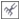

Быстрые ссылки на процедуры, описанные на этой странице:
• |
Эффект грубой кисти позволяет применять неровную или зазубренную кромку для объектов, включая линии, кривые и текст. Можно контролировать размер, угол, направление и число зубцов, используя активирование пера для графического планшета или параметры, относящиеся к мыши.
Эффект грубой кисти определяется либо движениями пера графического планшета (с фиксированными параметрами), либо автоматическим нанесением перпендикулярных пиков на линию. При большем или меньшем угле наклона пера относительно поверхности планшета увеличивается или уменьшается размер пиков. При использовании мыши можно задать угол наклона от 0 до 90°. Направление пиков можно определить, изменив угол поворота (или направление) пера при применении эффекта грубой кисти для объекта. При использовании мыши можно задать угол направления в диапазоне от 0 до 359°. Кроме того, можно увеличить или уменьшить число пиков, которые применяются при перетаскивании.
Эффект грубой кисти также зависит от силы нажима пера на планшет. Чем сильнее нажим, тем больше создается пиков в области грубой кисти. При использовании мыши можно указать значения для моделирования силы нажима пера на графический планшет.
Кроме того, можно изменить размер кончика кисти.
Эффект грубой кисти позволяет применять неровности или зазубрины для части абриса или пути.
| Применение эффекта грубой кисти для объекта |
1. |
Выберите объект с помощью инструмента Указатель |
2. |
В наборе инструментов выберите инструмент Грубая кисть .
|
3. |
Выберите на абрисе нужную область, а затем перетащите абрис, чтобы
исказить выбранную область.
|
Объекты с примененными эффектами искажений, оболочек, а также
перспективы перед применением эффекта грубой кисти
преобразуются в объекты кривых.
|
Чтобы угол наклона и угол направления зависели от пера
графического планшета, щелкните правой кнопкой мыши объект с
эффектом грубой кисти и выберите команду из подменю.
|
Для получения минимальных и максимальных значений для
элементов управления эффекта грубой кисти щелкните правой
кнопкой мыши элемент управления на панели свойств и выберите
Настройка.
|
Copyright 2012 Corel Corporation. Все права защищены.